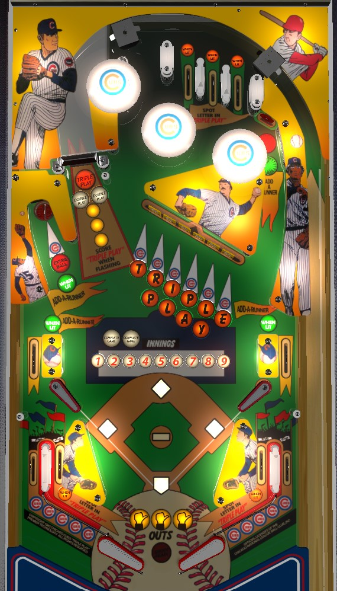

Not to be confused with Old Chicago (Bally, 1976) or any of the countless baseball-themed electromechanical games from the 1970s and earlier.
Spell Triple Play by completing the center drop targets in order or going through lit top lanes and in lanes to spot letters. Spelling Triple Play completes 2 innings (worth 20,000 in end of ball bonus) and lights the left saucer for extra ball (worth 500,000 in competition/novelty play). The other way to complete innings is to shoot the upper right standup target, the left saucer, or side lanes when lit green to put runners on base, then shoot the spinner to record outs (3 outs advances an inning). If you get 3 runners on base, then get them all out at once at the spinner, the upper right standup is lit for Special (500,000 points in competition).
One of the three top lanes is always lit for Spot Triple Play Letter. Unlit top lanes score 5,000 points. Lit top lanes score 10,000 points and one Triple Play letter. There is no flipper lane change; the lit top lane moves each time the spinner registers one spin.
Bumpers always score 1,000 points.
Hit the flashing drop target to light that letter in Triple Play. The goal is to spell Triple Play in order: Triple requires all 6 drop targets, while Play letters are earned from the 2nd, 3rd, 4th, and 5th drop targets. If a drop target is flashing, or if all letter(s) corresponding to that drop target are lit, knocking it down scores 10,000 points. A target that has one or more corresponding letters unlit and no letters flashing scores 5,000 points. The drop target bank only resets when Triple is spelled, when Play is spelled, or when all targets are knocked down. If the currently flashing letter is at an already-downed target, you must use a lit top or in lane to advance the letter, or you must complete the entire drop target bank to reset them.
Completing a spelling of Triple Play does not directly score any points, but it completes the next 2 innings, and lights the left saucer for extra ball. Innings each score 10,000 points as end of ball bonus, and extra ball is worth 500,000 points in competition/novelty play.
The upper right standup target, the two middle side lanes, and the left saucer can all be lit for Add Baserunner. Making a shot lit for Add Baserunner unlights it. Pop bumpers rotate which shots are lit for a baserunner, if not all of them. When one baserunner is on base, the spinner will be lit for Ground Out. When two baserunners are on base, the spinner will be lit for Double Play. When there are baserunners on all three bases, the spinner will be lit for Triple Play. Ground Out, Double Play, and Triple Play can be worth up to 1, 2, or 3 outs respectively. Making 3 outs ends and advances the current ending. Make an out by hitting the spinner hard enough to register 4 spins in a row without stopping. If Double Play or Triple Play is lit, you can record 2 or 3 outs at once by making a shot to the spinner that records 8 or 12 spins, respectively. Making a Triple Play in this way advances 2 innings instead of 1 and lights the upper right standup target near the bumpers for a Special, worth 500,000 points in competition/novelty play.
Chicago Cubs Triple Play has a conventional in/out lane setup. In lanes score 5,000 points or 10,000 and a Triple Play letter when lit, and are lit alternately based on spinner hits. Out lanes always score 10,000 points.
However, the setup above the in/out lane entrances is worth discussing. On both sides of the table, an upper side lane feeds the in/out lanes. The upper side lanes always score 5,000 points and can be lit to add a base runner based on pop bumper hits. The upper side lanes are aligned horizontally with the out lanes, but there is a pin above the out lane entrance that helps redirect an upper side lane ball back into the in lane. Be sure to nudge when the ball is over here to ensure it ends up in the in lane. There are also mini-flippers near this area as well. In general, mini flippers should be used to slow the ball down and gain control rather than being used for shotmaking and introducing lots of horizontal momentum. The ball can go under a mini flipper when it is raised, which allows the ball to enter or exit the part of the playfield immediately above the in/out lane entrances.
Bonus is calculated as 10,000 points per inning completed in the current baseball game, plus 100,000 points per full game completed. Only up to 2 complete games can be stored, so the max bonus is 280,000 points- 2 complete games, and 8/9 innings toward a third complete game. Bonus is cumulative over the entire game. There is no bonus multiplier or mid-ball bonus collect.
In competition/novelty play, extra balls and specials score 500,000 points, which is very meaningful compared to the rest of the game's scoring.